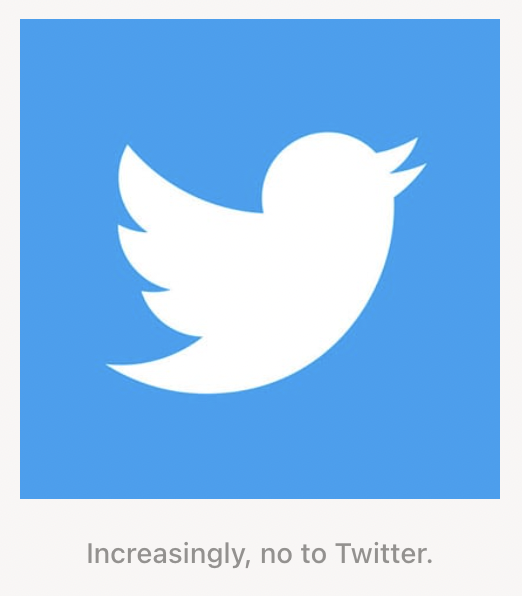

Laurel Schwulst: My Website Is A Shifting House
(WEEK 1)
What is a website? We explore into what defines handmade web and how we build a website from nothing. This article dives into related terms, metaphors, and discussions in building a world around your site. Schwulst also weighs on the importance of creating an individual space with practices and collections, especially in the growing corporate climate of web design software in our evolving technologies. Some great bird imagery is displayed as well in efforts to educate ourselves on varying topics.

Ursula K. Le Guin: A Rant On Technology
(WEEK 1)
Guin dives into the "hard" and "soft" descriptors used in the practice of science fiction. We begin with the argument that all science fiction is technologicaal, in the hopes of providing a point of view towards desensitization of convient processes versus handmade processes. One quote to take away from this piece from Guin states: "Technology is the active human interface with the material world."

J.R. Carpenter: A Handmade Web
(WEEK 2)
This writing dives into the definition of "handmade web," simple tools, and the desensitization of website building. Beginning in the 1990's website building was a "rich, personal, slow, and under construction" process. The significance of knowing how a website works has been less common knowledge for the public based on bigger, private companies making softwares more complex and simplified. This begins Carpenter's discussion of importance of representing and acknowledging individualized entities that create web from scratch, as "it becomes an increasingly radical act to hand-code and self publish experimental web art and writing projects."

Taeyoon Choi: Hello, World!
(WEEK 4)
This piece goes into topics around the makers of technology, their impact, and how to build computers from scratch. Taeyoon uses a beautiful combination of watercolor illustrations and writings to visualize the language of computer making and the history behind it. Theres a repeated discussion into the militarization of technology and the mass production in the computing industry. We begin to uncover the origins of computers: how they were human computed and based on female labor. A question that ends off chapter one but begins to introduce the rest of their essay goes, "Are cities computers for humans?"

Callum Copley: A Friend is Writing
(WEEK 5)
We dive into a discussion of synchronous communication, and its significance in instant messaging; the fact that we get to draft out our words before sending. We've created asynchronous actions, where nonverbal representations of actions may or may not be translated in virtual environments. Dialogues online create interpersonal relationships, and we are given this infinite loop of media, where we're "waiting for the loading screen."
Frank Chimero: The Web's Grain
(WEEK 7)
This reading analyzes the Internet and website building from the 1990's and the pattern of internet careers being exhausted over the years. The term "beginners mind" in coined as willingness to listen to the subject speak for itself, even if it contradicts received wisdom. Responsive design is brought up in discussion where "we expect technology to help us overcome limitations, not produce more of them." David Hockney's work in photography and painting is used to discuss time, space, and our interactions with it in the worlds we build online.

Mindy Seu: The Poetry of Tools
(WEEK 9)
We begin with removing function from form. Emilio Gomariz's Macintosh Lab series, Philippe Cao's Ritual for Empowerment, Alexei Shulgin's Form Art, and Sebastian Ly Serena's portfolio site are all virtual spaces made to tinker with the functionality and interactive qualities of their sites to create a new perspective on the space. They become choreographed outcomes, becoming rituals with some kind of viewed action.
Frank Chimero: The Good Room
(WEEK 11)
Topics include comfortability/uncomfortability in the world of technology. Overstimulation, overextension, over-commodified feelings--back in 2018 from this article, versus us now in the pandemic? We take a moment to consider stepping away from digital spaces, and acknowledge the physical spaces we have. We discuss the monetization of private spaces, amish communities, building and evolution of public spaces, and how we create communal spaces through social media.
